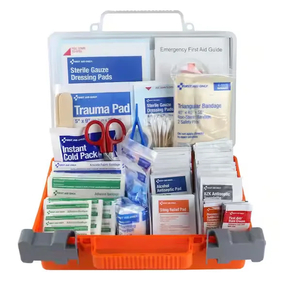

Expanded Nursing Uganda Explanation
Personal protection during first aid should be reviewed through safe maternal and newborn assessment, early recognition of danger signs, respectful communication and timely referral. Connect the definition to vital signs, bleeding, fetal or newborn wellbeing, patient education and local protocol requirements.
01 **FIRST AID KIT**
It is mandatory to have first aid kit in every work place like school, college, house and vehicles. It should be kept at such a place that is easily accessible. Also everyone should be aware of it. It should be labeled as “First Aid” and should have a red cross on a white background. From time to time, its items should be checked and replaced. All the required items should be available and ready for use at all times.
02 Components of a First Aid Kit
The minimum contents of the first aid box are as follows.
- Torch 01
- Thermometer – 01
- Tongue Depressor (Disposable ice cream spatula)
- Writing pad
- Pen/pencil
- Bandages of various types
- Gauze pieces
- Cotton
- Eye pads
- Scissors
- Plaster
- Safety pins
- Tourniquet
- ORS packets
- Glucose packets
- Methylated spirit
- Tincture of iodine
- Tincture of benzoin . ****
03 **PERSONAL PROTECTION OF A FIRST AIDER DURING FIRST AID.**
It is important to protect yourself and the casualty from infection as well as injuries. I.e. transmitting germs or infections to a casualty or contracting infection yourself from casualty.
This is because blood borne viruses such as hepatitis B, HIV may be transmitted by contact with body fluids and through giving mouth to mouth resuscitation. This increases if an infected person’s blood makes contact with yours through a cut.
Always be watchful for your personal safety, do not put yourself personal safety, do not put yourself at risk by attempting heroic rescues in hazardous circumstances.
WAYS OF MINIMISING THE RISK OF CROSS INFECTION
- Do wash your hands and wear latex free disposable gloves. If gloves are not available, ask the casualty to dress his or her own wound or enclose your hands in clean plastic bags.
- Do cover cuts on your hands with water proof dressing.
- Do wear a plastic apron if dealing with large quantities of body fluids and wear plastic glasses to protect your eyes.
- Do dispose of all waste safely.
- Do not touch any part of the dressing that will come into contact with the wound.
- Do not breathe, cough or sneeze over a round while treating the casualty.
OBSERVATION TECHNIQUE USED IN FIRST AID
E very injury and illness manifests itself in distinctive ways that may help your diagnosis. These clues (guide to solution of problem) are divided into two groups: – signs and symptoms. Some will be obvious, but other valuable ones may be overlooked unless you examine the casualty, thoroughly from head to toe.
A conscious casualty should be examined, in the position found, with any obvious injury comfortably supported, an unconscious casualty’s airway must first be opened and secured.
Use your senses: – sight, touch, hearing and smell. Be quick and alert, but be thorough and do not skimp or make assumptions. Ask the casualty to describe any sensations caused by touch as the examinations proceeds. Though you should handle the casualty gently, your touch must be firm enough to ensure that you will feel any swelling or irregularity or detect a tender spot.
What to observe for.
SYMPTOMS
- These are sensations that the casualty feels or experiences and may be able to describe. You may be able to describe. You may need to ask questions to establish their presence or absence.
- Ask a conscious casualty if there is any pain and exactly where it is felt. Examine that part particularly and then any other sites where pain is felt, severe pain in one place can mask a more serious, but less painful injury at another place.
- Other symptoms that may help you include nausea, giddiness (loss of balance), heat, cold, weakness and impaired sensation.
- All symptoms should be assessed and confirmed, whenever appropriate, by an examination for signs of injury or illness.
SIGNS .
- These are details discovered by applying your senses: – sight, touch, hearing, and smell, often in the course of examination.
- Common signs of injury include: – bleeding, swelling, tenderness or deformity, signs of illness that are very often evident are pale or flushed skin, sweating, a raised body temperature and a rapid pulse.
- Many signs are immediately obvious, but others may be discovered only in the course of thorough physical examination.
- If the casualty is unconscious, your diagnosis may have to be formed purely on the basis of the circumstances of the incident, information obtained from onlookers and signs discover.
04 **EMERGENCY**
An emergency refers to a sudden and potentially life-threatening situation that requires immediate medical attention.
PREPARING FOR EMERGENCY:
If you are prepared for unforeseen emergencies, you can ensure that care begins as soon as possible for yourself, your family and your fellow citizens.
You can be ready for most emergencies, if you do the following things now:
- Keep important information about you and your family in a handy place. Information regarding address, age, medical conditions, allergies, prescription, doctor’s name and phone number.
- Keep to emergency:
- Learn and stay practiced in first aid skills, such as cardiopulmonary resuscitation (CPR).
- Keep the first kit readily available in your home, work place, leisure center, and cars. Any first kit must be kept in a dry place and checked and replenished (refilled) regularly, so that items are always ready for use.
GOALS OF EMERGENCY MEDICAL TREAMENT
When care is being given to a patient in an emergency situation, many crucial decisions must be made. Such decisions require sound judgment based on understanding of the condition that produced the emergency and its effect on the person.
The major goals of emergency medical treatment are:
- To preserve life.
- To prevent deterioration before more definitive treatment can be given
- To restore the patient to useful living.
When the patient is first received into the emergency department, the goal is to determine the extent of injury (illness) and to establish priorities for the initiation of treatment. These priorities are determined by the comparative threat to the person’s life. Injuries or conditions interfering with vital physiologic function (obstructed airway, massive bleeding) take precedence (priority). Usually, injuries of the face, neck and chest that impair respiration command the highest priorities. Every member of the emergency team must be alert to the total problem of the patient, since the body cannot be isolated into parts.
PRINCIPLES APPLIED IN EMERGENCY MANAGEMENT
The following principles are applicable to the emergency management of any patient:
- Maintain a patient airway and provide adequate ventilation, employing resuscitation measures when necessary. Assess for chest injuries with subsequent airway obstruction.
- Control hemorrhage and its consequences.
- Evaluate and restore cardiac output.
- Prevent and treat shock, maintain or restore effective circulation.
- Carry out a rapid initial and ongoing physical examination, the clinical course of the injured or seriously ill patient is not static.
- Assess whether or not the patient can follow commands, evaluate the size and reactivity of the pupils and motor responses.
- Start electrocardiogram (ECG) monitoring, if appropriate.
- Splint suspected fractures of the cervical spine in patients with head injuries.
- Protect wounds with sterile dressings.
- Check to see if the patient has a medical alert tag or any similar identification designating allergies.
- Start a flow sheet of the patient’s vital signs, blood pressure, neurological status, etc. to guide decision making.
05 **ASSESSING A CASUALTY.**
This involves finding out what is wrong as quick as possible, however your first priority is to make sure that your not endangering yourself by approaching the casualty unless your sure that the incident area is safe.
AIMS OF ASSESSMENT
- To check the situation quickly and calmly while first protecting yourself and the casualty from any danger.
- To find out and treat any life threatening injuries first.
- To carry out more detailed findings of each casualty.
- To seek for appropriate help, in case of an emergency or if you suspect a serious injury or illness.
- To be aware of your own needs.
There are two methods of assessment namely:
- Primary survey.
- Secondary survey.
- 1 . Primary survey:
This is an initial, quick and systematic assessment of casualty to establish and treat conditions that are an immediate threat to life. When dealing with each life threatening condition, work in the following order; ABC principle
- Airway : Is the airway open and clear? If not, open and clear it. An obstructed airway will prevent breathing causing hypoxia and ultimately death. Breathing: Note if breathing is slow, fast, absent or gasping.
- Pulse : Note the pulse for its rate, rhythm, volume and tension.
- Breathing: Is the casualty breathing normally? Look, listen and feel for breaths. Blueness of tongue, lips, ear lobe and nail – Indicates lack of oxygen. If not call for emergence help and start chest compressions with rescue breaths (Cardio pulmonary resuscitation).
- Circulation: Is the casualty bleeding severely? This must be treated since it can lead to life threatening condition such as shock .
- Pallor : Note pallor or the degree of whiteness of tongue, conjunctiva and nails. This indicates the severity of bleeding. Therefore, control the bleeding and treat the casualty to minimize the risk of shock. Bleeding from any part of body and swelling. N.B: If the threatening conditions are successfully managed or there are none, you carry on assessment and perform a secondary survey.
- 2 . Secondary survey: This is a detailed examination of the a casualty to look for other injuries or conditions after a primary survey has been done it involves;
- Head to toe
(i) Head:
– Observe skin color, wound, confusion and facial symmetry.
– Check pupils
– Assess level of consciousness
– Palpate for depression of the skull.
– Check ears and nose for fluids or blood.
– Check the mouth for bleeding, dentures and any foreign body.
(ii) The neck: Observe and palpate for areas of tenderness and deformity.
(iii) Chest:
- Palpate clavicles and shoulders.
- Observe for wounds and whether the chest expands normally upon respiration.
- Press gently on sternum and ribs to check integrity.
( iv ) Arms:
- Palpate entire length for pain, wounds, deformity and sensation.
- Ask about pain, tingling, numbness and movement.
(v) Abdomen:
- Observe for distension or wounds.
- Pal pet for rigidity or tenderness.
(vi) Pelvis:
– Palpate the iliac crest and the pubis for pain.
– Observe for incontinence of the bladder and the bowel.
(vii) Spine: Palpate for tenderness, wounds and deformity.
(viii ) Legs: Palpate entire length for pain; deformity and sensation.
(b) HISTORY TAKING
– Ask what happened
– Ask about medical history to find out if there is ongoing and previous condition
– Ask about medication the casualty is taking currently
– Find out if the person has any allergy.
– Check when the person last had something to eat or drink
NOTE: Use ‘ ’AMPLE’’ as a reminder when assessing a casualty to ensure that you have covered all aspects of examination.
A – Allergy
M – Medication
P – Previous medical history
L – Last meal
E – Event history (what happened).
(c) SYMPTOMS: These are sensations that the casualty feels and describes to you. For example if the casualty complain of pain. (d) SIGN: These are features that can detect by observing and feeling the casualty such as swelling, bleeding, discoloration, deformity and smells. Use all your senses to look, listen, feel and smell.
POINTS TO CONSIDER WHEN DEALING WITH CASUALTY
- Make eye contact but look away now and then so as not to stare.
- Use a calm, confident voice that is loud enough to be heard but do not shout.
- Do not speak to quickly.
- Keep instructions simple by using short sentences and simple wards.
- Use affirming nods and ‘mmms’ to show that you are listening when the casualty is speaking.
- Check that the casualty understands what you mean.
- Do not interrupt the casualty but always acknowledge what you are told. For example summarizing what the casualty has told you to show that you understand.
- Be aware of risks.
- Build and maintain the casualty trust.
- Call appropriate help.
06 **POSITIONING OF A CASUALTY:**
A casualty is nursed in different positions in different situations. The commonly used positions are;
- Recovery position
- Prone position
- Fowler’s position/ sit up position
- Dorsal recumbent position.
- Positioning in shock.
RECOVERY POSITION:
This is used in unconscious patients/ casualties if breathing and has heart beat should be nursed in recovery position.
ADVANTAGES:
- It maintains open air way.
- The tongue cannot fall to the back of the throat.
- Head and neck will remain in the extended position so that the air passage is widened and that any vomiting or other fluid in the casualty’s mouth will drain freely.
The recovery position is as follows:
- Place the body in the prone position.
- Turn the head down to the one side. No pillows should be used under the head.
- Pull up the leg and the arm on the side to which the head is facing.
- Pull up the chin.
- Stretch other arm out as shown.
- His clothes should be loosened at the neck and waist and any artificial tooth should be removed.
NOTE: Recovery position cannot be used in:
- When there are fractures to the upper or lower body.
- When the casualty is lying in a confined space or if it is not possible to bend the limbs.
- PRONE POSITION
A patient is placed on his abdominal with head turned to one side. A pillow is placed under the head and hand’s kept on sides. This position is used for patients with burns of the back.
- FOWLER’S POSITION/ SIT UP POSITION
When a patient is having difficulty in breathing, this position is used. The patient is kept in a sitting position with the help of 3 or 4 pillows.
4. DORSAL RECUMBENT POSITION
The patient is kept on his back. A pillow is placed under the head. It is used for examination of the patient. This position without pillow is used in case of fracture of the spine and also to give CPR (cardio pulmonary resuscitation)
5. POSITIONING IN SHOCK.
Lay the casualty on the back turn head to one side. Raise the legs with two pillows to improve blood supply to the heart. If the victim has fracture on the lower limbs, it should not be elevated unless they are well splinted.
07 **RESUSCITATION (BASIC LIFE SUPPORT)**
Basic life support is an emergency life saving procedure that consists of recognizing and correcting failure of the respiratory and the cardio vascular system.
Basic life support comprises of ABC steps which concern the Airway, Breathing, and Circulation respectively.
For any one’s life to continue, the body needs adequate supply of oxygen to enter the lungs and transferred to all cells of the body through the blood stream. The most critical organ that should not fall short of Oxygen is the brain since it’s the master controller of all body functions.
Brain damage is possible if the brain is deprived of Oxygen for 4-6 minutes.
NOTE: Once you have started basic life support, do not interrupt it for more than 5 seconds for any reason accept it’s necessary to move the patient. Even in that interruption should not exceeds 7 seconds each.
- 1 . CHECKING RESPONSE:
- On discovering a collapse casualty, you should first establish whether he/she is conscious by asking simple questions like, what has happened or command the patient to do something e.g. ‘’open your eye’’.
- Speak loudly and clearly close to the casualty’s ears. If the casualty does not respond, try to shake his shoulders gently as you speak to him/her (fully unconscious casualty will make no response at all).
- The casualty may respond to pain, so you can gently pitch his/her skin.
- A casualty who is partially conscious makes unnecessary movements on pitching.
NOTE: Quick assessment can be done using the ‘’AVPU’’ code.
A – Alert
V – Response to voice
P – Response to pain
U – Unresponsive.
CHECK POINTS
- Eyes
- Speech
- Movement
HOW TO OPEN THE AIRWAY
- Place the person in are recumbent position (face up) on a hard surface.
- Place one hand on his fore head and gently tilt his head back. As you do this, the mouth will fall open slightly.
- Place the finger tips of your hand on the point of the casualty’s chin and lift the chin up.
- Check the casualty’s breathing. ****
HOW TO CHECK FOR BREATHING:
Keeping the air way open look, listen and feel for normal breath.
- Look for chest movements.
- Listen for sounds of breathing.
- Feel for breaths on your own cheek and see movement.
- Along her chest and abdomen.
Do this for not more than 10 seconds before deciding whether the casualty is breathing normally.
NOTE: If there is any doubt, act as if breathing is not normal.
IF THE CASUALTY IS BREATHING
- Check the casualty for any life threatening injuries e.g. severe bleeding and manage it as necessary
- Place the casualty in a recovery position.
- Call for emergency help e.g. call for the nearest ambulance services.
- Monitor and record vital signs for example, level of response, breathing as you wait for help to arrive.
IF THE CASUALTY IS NOT BREATHING
- Shout or ask for help (dial for an ambulance).
- Begin cardio- pulmonary resuscitation with chest compressions.
HOW TO GIVE CARDIO PULMONARY RESUSCITATION
- Kneel the casualty’s level with his chest.
- Place the heel of one hand on the center of the casualty’s chest.
- Place the heel of your other hand on top of the first hand and interlock your fingers making sure the fingers are kept off the ribs
- Leaning over the casualty with your arms straight, press down vertically on the breast bone. (Sternum) and depress the chest 5 – 6cm (2 – 2 1/2inch).
- Allow the chest to come back up fully before giving the next compression.
- Compress the chest 30 times at a rate of 100 – 120 compressions per minute. The time taken for compression and release should be about the same.
- Move the casualty’s head and make sure that the airway is still opened.
- Put one hand on his fore head and two fingers of the other hand under tip of his chain.
- Move the hand that was on the fore head down to pitch the soft part of the nose with the finger and the thumb.
- Allow the casualty’s mouth to fall open.
- Take a breath and place your lips around the casualty’s mouth making sure that you have made a good seal. Blow into the casualty’s mouth until the chest rises. A complete rescue breath should take one second. Adjust the head position if the chest doesn’t rise.
- Maintaining the head tilt and chin lift, take your mouth off the casualty’s mouth and look to see the chest fall. If the chest rises visibly as 61,000 and falls fully when you lift your mouth a way, you have given a rescue breath. Give a second rescue breath.
8. Continue the cycle of 30 chest compressions followed by two rescue breaths. This is done until emergency help arrives or another first aider takes over or until the casualty shows signs of regaining consciousness, such as coughing, opening eyes, speaking or moving purposely e.tc. It can also be until you are too exhausted to continue.
08 Nursing Uganda Clinical Lens
Use Components of a First Aid Kit as a practical nursing topic, not only a memorized definition. Prioritize airway, breathing, circulation, pain, asepsis, wound healing and early complication detection.
- What to understand first: define components of a first aid kit, identify the normal or expected pattern, then explain what changes when the patient is unwell.
- Why it matters in care: the nurse must recognize risk early, explain findings clearly, document accurately and know when to escalate.
- How to revise it: connect each point to assessment, nursing diagnosis or care problem, intervention, rationale and evaluation.
09 Assessment Guide
- Vital signs, pain, bleeding, perfusion, level of consciousness and injury pattern.
- Wound appearance, drainage, odour, swelling, temperature and surrounding skin.
- Fluid balance, mobility, nutrition, surgical site risk and ordered investigations.
10 Nursing Priorities, Rationales and Outcomes
- Stabilize urgent problems first, then prepare for investigations or theatre care.
- Maintain aseptic technique, pain control, wound care and documentation.
- Prevent shock, infection, pressure injury, deep vein thrombosis and delayed healing.
The rationale for these priorities is patient safety: nursing actions should prevent deterioration, reduce discomfort, support recovery and create clear evidence for the next caregiver.
- Expected outcome: The patient remains stable, wound healing progresses, pain is controlled and complications are recognized early.
11 Patient Teaching and Revision Check
- Explain components of a first aid kit in simple language the patient or caregiver can repeat back.
- Teach warning signs, medicine or follow-up instructions, hygiene or lifestyle points where relevant.
- For exams, prepare a short answer using: definition, causes or risk factors, signs, assessment, management, complications and prevention.
- For ward practice, document baseline findings, actions taken, patient response and the plan for review.
Illustrations and Diagrams (3)



Related Video Lectures
Watch nursing lecture videos on YouTube for this topic. Opens in a new tab.
Watch on YouTubeExternal link: YouTube may use its own cookies and terms. Nursing Uganda is not affiliated with YouTube.